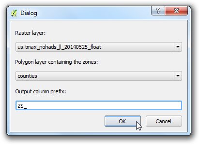

처리 모델러로 복잡한 작업흐름도 만들기
GIS 작업흐름도는 전형적으로 많은 단계를 포함합니다. 각 단계는 중간 결과물을 만들어 내고 이것은 다음 단계에 사용됩니다. 만약 입력 데이터가 바뀌거나 매개변수를 바꾸고 싶다면 전체 처리 과정을 일일히 다시 분석해야 할 필요가 있습니다. 다행이도, QGIS는 시각적 모델러가 기본적으로 포함되어 있어 작업흐름도를 정의할 수 있고 한번에 구동시킬 수 있습니다. 대량의 입력 데이터도 일괄처리로써 작업흐름도를 구동시킬수도 있습니다.
과업 개요
이 예제에서는 토지이용이 분류된 래스터 데이터에서 특정 클래스 지역을 추출하는 모델을 어떻게 만드는지 보여줍니다.
과정
이 예제의 작업 흐름도는 다음 단계로 진행됩니다.
이어지는 단계는 다운로드한 데이터셋을 대상으로 앞서의 처리 과정을 모델로 코드화하고 구동하는 것을 보여줍니다.
QGIS를 시작하고 메뉴: 처리 -> 시각화 모델러 :menuselection:`Processing –> Graphical Modeler...`로 가십시오.

처리 모델러 Processing modeler 다이알로그는 왼쪽 패널과 오른쪽 메인 캔버스로 구성되어 있습니다. 왼쪽 패널에서 입력 :guilabel:`Inputs`을 선택하고 :guilabel:`+ Raster layer`를 캔버스로 끌어다 놓습니다.

파라미터 정의 Parameter definition 다이알로그가 나타납니다. 파라미터 이름 :guilabel:`Parameter name`에 ``Input``을 입력하고 필수 :guilabel:`Required`에 ``Yes``를 표시합니다. 확인 :guilabel:`OK`을 누릅니다.

- You will see a box with the name Input appear in the canvas.
This represents the landcover raster that we will use as input. Next step
is to apply a
Majority filter algorithm. Switch to the
Algorithm tab from the bottom-left corner. Search for the
algorithm and you will find it listed under SAGA provider. Drag
it to the canvas.
주석
If you do not see this algorithm or any of the subsequent algorithms
mentioned in thi tutorial, you may be using the Simplified
Interface of the Processing Toolbox. Switch to the Advanced
Interface by using the dropdown at the bottom of the Processing
Toolbox in the main QGIS window.

- A configuration dialog for Majority Filter will be presented.
Leave the values to their default and click OK.

이제 캔버스에 Majority Filter 라는 이름의 새로운 상자가 나타나고 그것이 Input 상자와 연결되어 있음을 알게 될 것입니다. 이것은 Majority Filter 알고리즘이 입력데이터로 Input 를 사용하기 때문입니다. 작업흐름도에서 다음 단계는 majority filter의 결과물을 벡터데이터로 전환하는 것입니다. Polygonize (raster to vector) 알고리즘을 찾아서 캔버스로 드래그합니다.
주석
The boxes can be moved and arranged by clicking on it and dragging it while
holding the left mouse button. You can also use the scroll-wheel to zoom in
and out in the model canvas.

입력레이어 :guilabel:`Input layer`에서 값으로 ‘Filtered Grid’ from 알고리즘 ‘Majority Filter’를 선택하십시오. 확인 :guilabel:`OK`을 누르십시오.

작업흐름도의 마지막 단계는 클래스값을 조회하고 매칭되는 객체로부터 새로운 레이어를 만드는 것입니다. ``Extract by attribute``를 찾아서 캔버스로 끌어다 놓습니다.

:guilabel:`Input Layer`로 ‘Vectorized’ from 알고리즘 ‘Polygonize (raster to vector)을 선택합니다. 경작지를 나타내는 픽셀을 추출하려는 것입니다. 이 클래스와 일치하는 픽셀값은 12입니다. (`Code Values <http://www.landcover.org/data/lc/>`_를 보십시오.) :guilabel:`Selection attribute`로 ``DN``을, 값 :guilabel:`value`으로 ``12``를입력합니다. 이 작업의 출력물이 최종 결과물이 될 것이므로 출력물에 이름을 붙일 필요가 있습니다. 출력 :guilabel:`Output`에 ``vectorized class``라고 입력합니다.

모델이름 Model name`에 ``vectorize`, 그룹이름 Group name 에 ``raster``를 입력합니다. 저장 Save 단추를 누릅니다.

모델이름에 ``vectorize``라고 입력하고 저장 :guilabel:`Save`을 누릅니다.

이제 모델을 시험해 볼 차례입니다. 모델러를 닫고 QGIS 메인 창으로 전환합니다. 메뉴에서 레이어 -> 레이어 추가 -> 래스터 레이어 추가 :menuselection:`Layer –> Add Layer –> Add Raster Layer...`로 갑니다.

다운로드한 LC_hd_global_2001.tif.gz 파일을 찾고 열기 :guilabel:`Open`를 누릅니다. 일단 래스터가 올라오면 메뉴에서 처리 -> 툴박스 :menuselection:`Processing –> Toolbox`로 갑니다.

메뉴 모델 하위에 있는 새롭게 만든 모델을 찾습니다. 모델을 실행시키기 위해 더블 클릭을 실시합니다.

:guilabel:`Input`으로 ``LC_hd_global_2001``을 선택하고 :guilabel:`Run`을 누릅니다.

사용자의 어떠한 입력도 없이 모든 단계가 실행되는 것을 보게될 것 입니다. 일단 과정이 종료되면 ``vectorized_class``라는 새로운 레이어가 QGIS에 추가됩니다. 모델을 조금 개선시켜 보겠습니다. ``vectorize``모델을 오른쪽 클릭하고 모델 수정 :guilabel:`Edit model`을 선택합니다.

12번에서 클래스 값으로 ``12``를 입력했습니다. 이번에는 사용자가 입력 매개변수를 변경할 수 있도록 할 수 있습니다. 이 부분을 추가하기 위하여 입력 Inputs 탭으로 전환하고 스트링 :guilabel:`+ String`을 끌어서 모델로 옮깁니다.

파라미터 이름 :guilabel:`Parameter Name`에 ``Class``라고 입력을 합니다. 기본값 :guilabel:`Default value`에 ``12``를 입력합니다.

이제 강제로 매개변수를 입력하는 대신에 이 방법으로 Extract by attribute 알고리즘을 바꿀 수 있습니다. Extract by attribute 상자 옆에 있는 수정 Edit 단추를 누릅니다.

- Click the dropdown arrow for Value and select
Class. Click
OK.

- You will see from the model diagram that the Extract by
attribute algorithm now uses 2 inputs. The modeler has a shortcut to
launch the model and test it. Click the Run button from the
toolbar.

- Notice that the model dialog has a new editable field called
Class. Enter
16 as the Class value and click
Run.

- Once the processing finishes, you will see that with just a click of a
button we were able to run a complex workflow and extract the area for
class 16.

- Now that our model is ready, we can run it just as easily on a new raster
layer. Load the
LC_hd_global_2012.tif.gz file by going to
. Click the
vectorize` model from the Processing Toolbox panel.

- Pick the
LC_hd_global_2012 layer as the Input and click
Run.

- Once the new output is loaded, you can compare the changes in the Croplands
from 2001 to 2012.

- It is always a good idea to add documentation to your model. The modeler
has a built-in Help editor that allows you to embed help
directly in the model. Right-click the
vectorize model and select
Edit model.

- Click the Edit model help button from the toolbar.

- In the Help editor dialog, select any item from the
Select element to edit panel and enter the help text in
Element description. Click OK. This help will be
available in the Help tab when you launch the model to run.

Models can be a great timesaver and allow you to write your workflow once and
run it multiple times. You can even share your model with other users. The
model files are saved in the .qgis2 directory. You can send the .model
file to another user who can copy it to the appropriate directory on their
computer and it will appear in the Processing toolbox. The models
directory location will depend on the platform as follows: (Replace
username with your login name)
Windows
c:\Users\username\.qgis2\processing\models\
Mac
/Users/username/.qgis2/processing/models/
Linux
/home/username/.qgis2/processing/models/